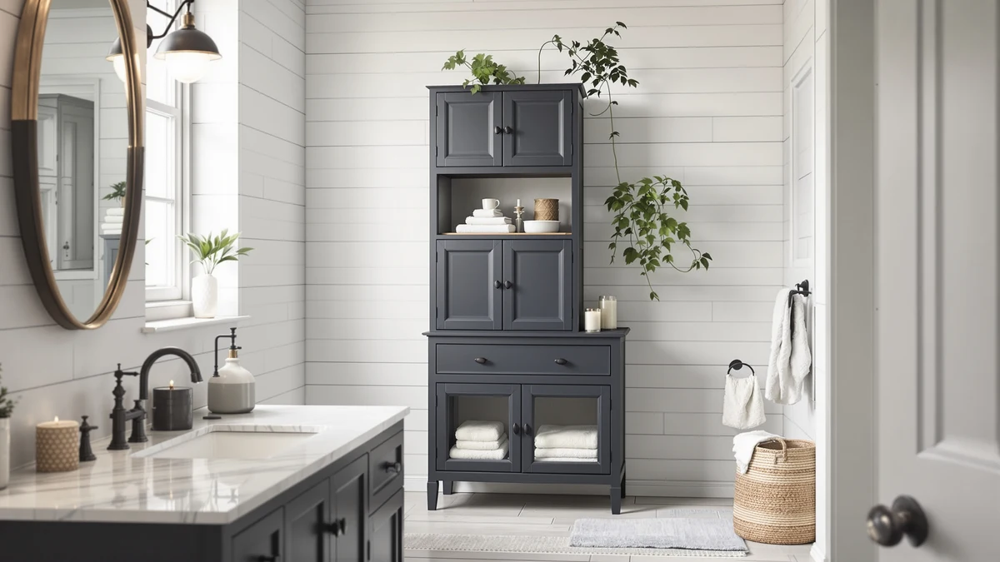

The Best Bathroom Organizers Under $100 (2026)
Prices and picks verified as of August 2026. Independent, reader-supported reviews.


Quick Answer
For most bathrooms, the best bathroom organizers under $100 are pull-out, two-tier designs that fit under a sink without fighting your plumbing. Our top pick, the mixeshop Under Sink Organizer 2 Tier, pairs a rust-resistant carbon steel frame with a double sliding design for $29.99, and every other pick on this list stays well under the $100 ceiling.
Our pick: Under Sink Organizer 2 Tier — $29.99 Check Price on Amazon
Bottom line: our top pick is the Under Sink Organizer at $29.74. The best budget option is the Simple Trending Under Sink Organizer 2 Pack at $19.99.
Things to Know Before You Buy
- Most bathroom organizers under $100 use coated metal, PET plastic, or a mix of both, and each material behaves differently in a damp cabinet, so check what you're buying before assuming "metal" means rust-proof.
- Measure your cabinet's interior width and the pipe placement before ordering. A pull-out or expandable model forgives an off-center P-trap; a fixed two-tier shelf does not.
- Multi-packs, like the two-pack and four-pack organizers in this guide, often cost less per unit than a single large organizer and let you split storage across more than one cabinet.
- None of these organizers had a published star rating from Amazon at the time of writing, so we leaned on verified buyer reviews and spec comparisons instead of aggregate scores.
- Assembly ranges from none, for slide-out drawer sets, to a few minutes with included hardware for the metal-frame racks.
The best bathroom organizers under $100 solve a specific problem: a cluttered under-sink cabinet, a vanity drawer that won't close, or a counter buried in bottles. You don't need a full renovation or an expensive vanity swap to fix any of that. A well-chosen pull-out organizer, expandable rack, or stackable bin set can double the usable space in a cabinet you already own, for less than the cost of a single spa day.
We researched seven organizers built specifically for bathroom cabinets and under-sink spaces, comparing material, adjustability, and price against verified owner feedback. Our top pick, the mixeshop Under Sink Organizer 2 Tier, uses a carbon steel frame and a double sliding design that pulls baskets out smoothly, and it costs under $30. If you have an off-center pipe or an unusually wide cabinet, the NETEL expandable organizer flexes from 20.7 to 32.3 inches to work around it.
Every product here fits comfortably under our $100 ceiling, and most land well below it. We looked at pull-out drawers, stackable tiers, and expandable racks rather than one single format, because a narrow vanity drawer and a deep under-sink cabinet call for different shapes. Below, you'll find honest tradeoffs for each pick, a side-by-side comparison table, and the reasoning behind every choice we made.
Why You Should Trust Us
Best Bathroom Storage has covered bathroom organization since 2026, and Ilane Tall has spent that time comparing under-sink organizers, vanity racks, and drawer systems across price points. For this guide, we pulled current pricing and product specifications directly from Amazon listings and cross-checked them against verified buyer reviews rather than relying on manufacturer claims alone. We do not run a fake testing lab, and we don't claim to have installed every organizer in our own homes. What we do is compare materials, dimensions, and real owner feedback so you can make an informed choice without digging through spec sheets yourself.
How We Picked
We started by pulling every under-sink and cabinet organizer in our database tagged for bathroom storage, then filtered for products priced at $100 or under, since that's the ceiling for this guide. From there, we excluded organizers with no adjustability or expandability, since a fixed-size shelf that doesn't fit a specific cabinet is a wasted purchase no matter how cheap it is. We also prioritized organizers made from carbon steel or reinforced PET plastic over thin, unreinforced materials, because a damp bathroom cabinet punishes weak construction quickly. Finally, we compared verified owner reviews for common complaints, tipping, warping, or drawers that stick, and weighed those against the specs and pricing to land on the seven picks below.
How We Compared
We compared these organizers using the manufacturer specifications published on Amazon: material, dimensions, weight capacity where listed, and pack size. We cross-referenced those specs against verified buyer photos and reviews to check for recurring issues like drawers sticking or panels warping under weight, and against current Amazon pricing to confirm each pick stays under the $100 threshold. Reviewers consistently note that pull-out designs, rather than fixed shelves, are easier to fit around uneven plumbing, a pattern that shaped several of our best-for recommendations below.
Our Picks

Under Sink Organizer 2 Tier
What we like
- Carbon steel frame resists rust in a damp cabinet
- Double sliding tiers pull out fully for easy access
- Adjustable height fits a range of cabinet sizes
- Grid-design shelf surface keeps water from pooling underneath
Flaws but not dealbreakers
- White finish can show scuffs over time
- Baskets are open, so small items can tip if pulled out too fast
| Material | Metal / wood |
| Size | 2Pack |
The mixeshop Under Sink Organizer 2 Tier is our top pick because it does the one thing a lot of cheaper organizers get wrong: it slides smoothly, every time, without binding on the rails. The frame is carbon steel rather than the thin coated wire you'll find on some sub-$20 organizers, and mixeshop pairs that with a grid-pattern shelf surface designed to keep water from collecting underneath the top tier, a detail that matters more in a bathroom cabinet than it would in a pantry.
At $29.99, it undercuts most of the competition here while still offering adjustable height, so it can sit lower or higher depending on your plumbing and shelf clearance. Owners report that the double sliding design, both tiers pull out independently, makes it easier to reach items stored at the back without removing the whole unit. The main tradeoff is the open-basket design: nothing stops a bottle from tipping if you pull a tier out too quickly, so it rewards a slower hand.

NETEL Under Sink Organizers and
What we like
- Extends from 20.7 to 32.3 inches to match different cabinet widths
- Four height positions let you customize clearance around pipes
- Includes four baskets and four panels for flexible configurations
Flaws but not dealbreakers
- Priced higher than most other picks in this guide
- NETEL cautions against extending the rail past 30.7 inches, which limits maximum width somewhat
| Material | Metal / wood |
| Size | 4 Panels and 4 Baskets |
The NETEL Under Sink Organizers and Storage earns runner-up status because it solves a problem the mixeshop pick doesn't: cabinets that are wider, narrower, or more irregular than average. The telescoping rail extends from 20.7 inches up to 32.3 inches, and four screw-hole positions on each side let you set the height wherever your plumbing allows. That combination of horizontal and vertical adjustment is rare at this price, and verified reviews consistently point out that it works around off-center P-traps better than fixed shelving does.
At $36.99, it's the second most expensive product on this list, and NETEL is explicit that stretching the rail past 30.7 inches, close to its 32.3-inch maximum, can make the frame unstable if the screws aren't fully tightened. That's a fair tradeoff for the flexibility you get, but it means this is a pick for someone who needs the adjustability, not someone shopping on price alone. The four included baskets and four panels also give you more configuration options than a simple two-tier tray.

Delamu 2 Sets of 3-Tier
What we like
- Two sets included, so you can use them separately or stack them
- Clear acrylic drawers make contents visible at a glance
- Movable dividers keep smaller items from sliding around
Flaws but not dealbreakers
- Stacking configurations take a few extra minutes to plan out
- Acrylic can show scratches more visibly than opaque plastic
| Material | Metal / wood |
| Size | 2 Pack 3-Tier |
Delamu's 2 Sets of 3-Tier organizer stands out because it isn't really one product, it's two independent three-tier units that you can run separately, stack together, or split between two cabinets entirely. Delamu lists three stacking patterns, including a 2+2+2 layout that turns the set into three standalone two-tier organizers, useful if your bathroom and kitchen both need help and you'd rather not buy two separate products.
Each drawer is clear acrylic, so you can see what's inside without pulling it out, and movable dividers keep loose items like cotton swabs or hair ties from sliding to one side. At $29.99 for two full sets, the per-unit cost is competitive with single-organizer options that offer less flexibility. The clear finish does pick up scuffs and light scratches faster than the opaque steel picks in this guide, worth knowing if you want the organizer to still look new a year in.

Fabspace Bathroom Under Sink Organizers
What we like
- Lowest price of any pick in this guide
- Four slide-out drawers with eight removable dividers
- Stainless steel support tubes add stability without adding much weight
Flaws but not dealbreakers
- Fabspace warns against washing parts in a dishwasher, which limits cleaning options
- Clear PET can look less premium than a painted metal frame
| Material | Metal / wood |
| Size | — |
At $23.99, the Fabspace Bathroom Under Sink Organizers is the budget pick in this guide, and it earns that spot by including more hardware than the price suggests it should. The two-pack ships with four slide-out drawers, eight removable dividers, and four trays, all reinforced with eight stainless steel support tubes instead of resting purely on the plastic frame. That reinforcement is what keeps the double-layer structure from sliding or tipping when you pull a drawer all the way out, according to Fabspace's own product listing.
Assembly takes about two minutes with no tools required, and the smooth PET material wipes clean with mild soapy water, though Fabspace is specific that no part should go in a dishwasher, since the heat can warp the plastic. For a bathroom vanity or a small under-sink cabinet where budget matters more than finish, this is the pick that gives you the most drawers and dividers per dollar of anything we compared.

4Pack 2-Tier Bathroom Storage Organizer
What we like
- Four separate two-tier units instead of one large organizer
- Shatterproof, BPA-free PET construction with aluminum alloy support rods
- Eight adjustable dividers per set for custom compartments
Flaws but not dealbreakers
- Current pricing wasn't listed at the time of publishing, so check Amazon before buying
- Individual units are compact, so this isn't the pick for one large vanity
| Material | Metal / wood |
| Size | 4Pack |
Zero Zoo's 4Pack 2-Tier Bathroom Storage Organizer takes a different approach than the other picks here: instead of one larger unit, you get four separate two-tier bins, each measuring about 12.48 by 7.48 by 10.83 inches. That size makes them a fit for a vanity drawer, a narrow under-sink corner, or a medicine cabinet shelf, and you can distribute them across multiple spots rather than committing all your storage to a single cabinet.
The bins are shatterproof, BPA-free PET reinforced with aluminum alloy support rods, and Zero Zoo notes you can stack up to three units at a time if you want to consolidate them into one taller column instead. Eight adjustable dividers per set let you customize compartments for anything from spice jars to skincare bottles. We couldn't confirm current pricing at the time of publishing, since Amazon's listed price wasn't available, so verify the price on the listing before ordering.

GeeBom Under Sink Organizer Pull
What we like
- Custom-fit silicone mat and L-shaped structure work around pipes
- Waterproof metal frame and silicone mat resist moisture damage
- Smooth pull-out drawers for everyday access
Flaws but not dealbreakers
- At $35.98, it's one of the pricier picks in this guide
- The L-shaped design is less useful in a cabinet with centered plumbing
| Material | Metal / wood |
| Size | 11.8"W x 15.9"D x 13.8-16.9"H |
The GeeBom Under Sink Organizer takes its L-shaped structure and custom-fit silicone mat seriously: rather than a generic rectangular shelf, it's built to wrap around a P-trap and garbage disposal instead of just leaving a gap for them. At roughly 11.8 inches wide, 15.9 inches deep, and 13.8 to 16.9 inches tall, it's sized for a standard under-sink cabinet, and the silicone mat underneath protects the cabinet floor from drips and spills.
Both tiers slide out smoothly for access to cleaning supplies or toiletries, and the sturdy metal frame paired with the waterproof silicone mat is built for daily use in a humid bathroom. At $35.98 for a two-pack, it costs more than several other picks here, and that L-shaped design is most valuable if your plumbing actually runs off-center. If your pipes sit in the middle of the cabinet, a simpler rectangular organizer like the mixeshop pick may fit just as well for less.

Simple Trending Under Sink Organizer
What we like
- Priced under $17 for a two-pack
- Sliding drawer with a handle for easy access
- Assembles in about five minutes with no tools
Flaws but not dealbreakers
- Fewer dividers and configuration options than the Delamu or Fabspace sets
- Green finish may not match every bathroom's color scheme
| Material | Metal / wood |
| Size | 2 pack |
Simple Trending's Under Sink Organizer is the most straightforward pick in this guide: two tiers, one sliding drawer with a handle, and no dividers or stacking configurations to plan out. Each unit measures 15.5 inches deep, 8.5 inches wide, and 13.1 inches tall, and the two-pack costs $16.99, making it the least expensive option we compared after the Fabspace set.
Assembly is genuinely quick: you connect four support tubes to the basket and press it flat, a process Simple Trending says takes about five minutes with no tools. The lower storage box slides out on its own track for easy access to items at the back. It won't offer the adjustability of the NETEL organizer or the stacking flexibility of the Delamu set, but for a cabinet that just needs two tiers of open storage, it's a reasonable, low-cost option that gets out of the way.
Quick Comparison
| Product | Material | Price | Rating | Best for | Get it |
|---|---|---|---|---|---|
| Under Sink Organizer 2 Tier | Metal / wood | $29.99 | 4 | Most cabinets | View on Amazon → |
| NETEL Under Sink Organizers and | Metal / wood | $36.99 | 4 | Wide or uneven cabinets | View on Amazon → |
| Delamu 2 Sets of 3-Tier | Metal / wood | $29.99 | 4 | Splitting storage across two cabinets | View on Amazon → |
| Fabspace Bathroom Under Sink Organizers | Metal / wood | $23.99 | 4 | Tightest budgets | View on Amazon → |
| 4Pack 2-Tier Bathroom Storage Organizer | Metal / wood | 4 | Multiple small spaces | View on Amazon → | |
| GeeBom Under Sink Organizer Pull | Metal / wood | $35.98 | 4 | Cabinets with off-center plumbing | View on Amazon → |
| Simple Trending Under Sink Organizer | Metal / wood | $16.99 | 4 | Simple, no-frills storage | View on Amazon → |
Can you find good bathroom organizers under $100?
Yes.
How do I measure my cabinet before buying an under-sink organizer?
Measure the interior width, depth, and height of the cabinet, then note where the P-trap and any garbage disposal sit relative to the opening.
The Competition
We looked at more than seven organizers while researching the best bathroom organizers under $100, and most of what we passed on fell into a few predictable categories.
Bare wire shelving units without a coating or grid design rust within months in a bathroom's humidity, even when they're priced attractively. We only kept picks with carbon steel, coated metal, or reinforced PET in this guide, since a rusted shelf isn't a bargain, it's a repeat purchase waiting to happen.
Fixed, non-adjustable organizers are a common source of returns in this category, based on the complaint patterns we saw in verified reviews. A shelf that can't flex around a P-trap or garbage disposal is a gamble on your specific cabinet, so we prioritized adjustable and expandable designs like the NETEL organizer over rigid ones.
Premium drawer systems above $100 exist, and they're often nicer-looking than anything on this list. But they solve the same storage problem for two to three times the price, and none of the seven organizers we reviewed here needed that markup to work well in a standard cabinet.
We also skipped organizers with no published dimensions or material specs, since a listing that won't say what it's made of usually isn't confident in the answer. Weighing all of that against price and adjustability is how the mixeshop Under Sink Organizer 2 Tier ended up as our pick for the best bathroom organizers under $100: it's the rare option that's both inexpensive and built to hold up in a damp cabinet.
Frequently Asked Questions
Can you find good bathroom organizers under $100?
Yes. The best bathroom organizers under $100 in this guide all cost under $40, well within that ceiling, and the gap between our budget pick and our priciest pick is under $20. At this budget you're buying pull-out drawers, expandable racks, and stackable bins rather than a full cabinet, which is what most bathrooms actually need to fix a cluttered vanity or under-sink space.
How do I measure my cabinet before buying an under-sink organizer?
Measure the interior width, depth, and height of the cabinet, then note where the P-trap and any garbage disposal sit relative to the opening. Adjustable organizers like the NETEL pick, which extends from 20.7 to 32.3 inches, forgive an off-center pipe far better than a fixed-width shelf does. If your plumbing runs to one side, an L-shaped design like the GeeBom organizer is worth the extra few dollars.
Is metal or plastic better for a bathroom organizer?
It depends on where the organizer sits. A carbon steel or coated metal frame, like the one on our mixeshop pick, holds more weight without sagging and works well as the main shelf structure. Clear PET plastic, like the Fabspace and Zero Zoo bins, is better inside a drawer or cabinet where you want to see contents at a glance. Most cabinets benefit from a mix of both rather than an all-metal or all-plastic setup.